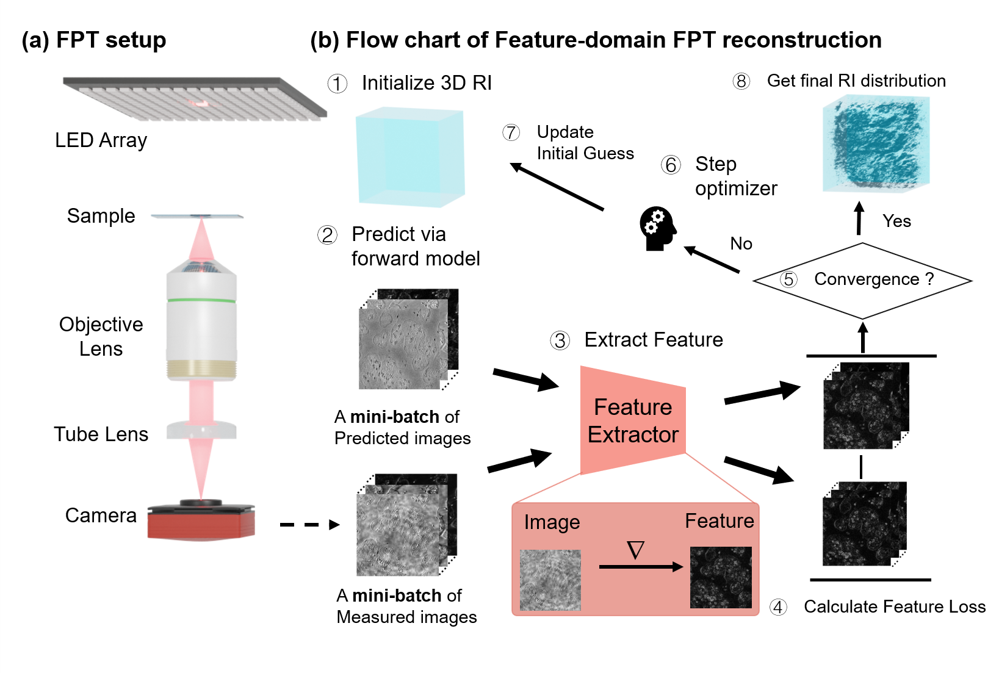
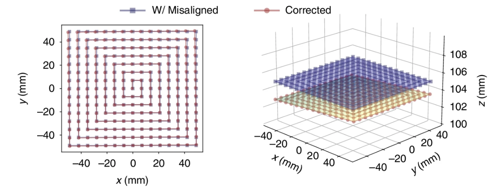
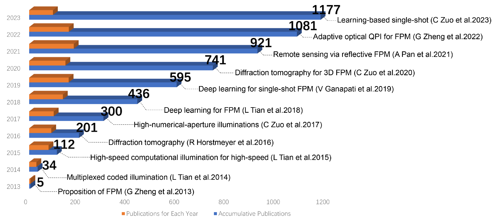
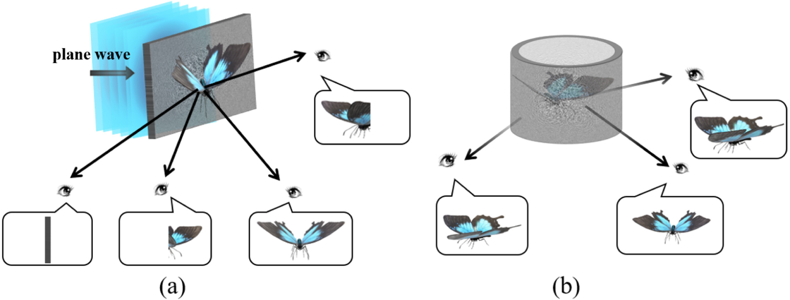

About Me
I am a Ph.D. student in the Department of Electrical and Computer Engineering at The University of Hong Kong (HKU), advised by Prof. Edmund Y. Lam. Prior to joining HKU, I received my M.S. degree in Bio and Brain Engineering from KAIST under the supervision of Prof. Mooseok Jang, and my B.Eng. degree from Sichuan University.
News
Selected Publications
† Equal contribution · ✉ Corresponding author · Bold and underlined indicates my name.

Summary: Feature-domain optimization improves the robustness of dark-field Fourier ptychographic tomography and enables label-free, gigavoxel-scale 3D refractive-index imaging with millimeter-scale coverage and cellular-scale structural contrast.

Summary: A physics-informed differentiable framework that jointly estimates the sample and system parameters, improving the robustness and fidelity of Fourier ptychographic reconstruction under experimental uncertainties.

Summary: A comprehensive review of the first decade of Fourier ptychographic microscopy, spanning its theoretical foundations, system implementations, biomedical applications, three-dimensional imaging, and integration with deep learning.

Summary: A scaled-convolution diffraction method that enables efficient and flexible cylindrical hologram generation beyond conventional height constraints, validated through optical experiments.

Summary: A spherical-crown diffraction model for holographic Maxwellian displays that expands the achievable field of view without introducing complex optical components.